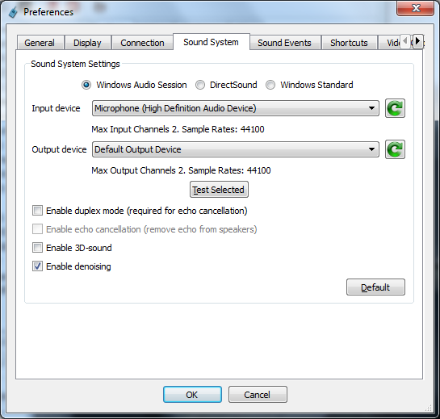
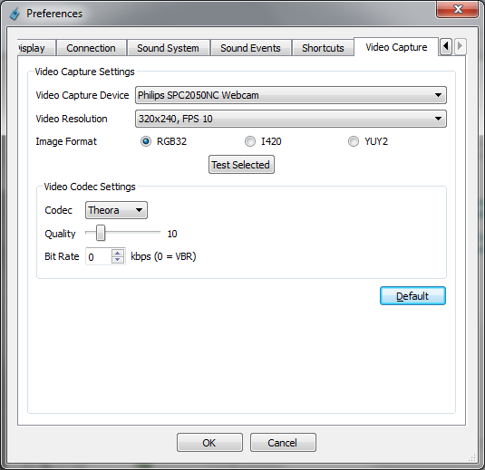

TeamTalk 4 Help
Home
TeamTalk 4 Help
Home
Quick Start
This section gives a brief introduction on how to set up TeamTalk
and
connect to a server so you can chat with other TeamTalk users. The
first section explains how to configure TeamTalk and the second
section
shows how to connect to a public TeamTalk server.
Here's an overview of this section:
Configuring TeamTalk
To start configuring TeamTalk simply press F4 which will bring up
the Preferences
window. The first tab in Preferences is called General
and allows you to choose the nickname you want to use when talking
to
other users. If you're using speakers and not a head-set it is
recommended to set up a Push to Talk key-combination and
disable Voice Activation. A Push to Talk
key-combination is a set of keys you need to hold down whenever
you're
talking (the Control-key would be a good choice). Using Push to
Talk ensures there will not be echos from speakers when
people are
talking. Below is shown the recommended settings in the General-tab:
Configuring Sound System
Since some computers have several sound devices it is advised to
ensure
that the proper sound devices are selected in the Sound System-tab.
If
your microphone is not of the best quality it is advised to Enable
denoising.

Configuring Web Camera
If you have a web camera this can be configured in the Video
Capture-tab. When configuring your web camera it is important
to
choose settings which do not overload your Internet connection and
thereby causing the video quality to become poor. Also if some of
the
people in your video chat have a low bandwidth Internet connection
also
take this into account when configuring your web camera settings.
Below
is shown how a web camera is configured to work well on an Internet
connection with 128 KBit upstream:

TeamTalk supports many ways to configure one's web camera and it
often
takes some trail and error before everything is running smoothly for
all users you're chatting with. If the users you're chatting with
say
that you're blinking red it means you have chosen video settings
which
are too demanding for your Internet connection.
Here is a list of recommended video settings based on an Internet
connection's available bandwidth:
- 64 KBit upstream
- Video Resolution: 160x120, FPS 15
- Image Format: I420
- Video Codec Settings
- Quality: 5
- Bit Rate: 0 KBps
- 128 KBit upstream
- Video Resolution: 320x240, FPS 15
- Image Format: I420
- Video Codec Settings
- Quality: 8
- Bit Rate: 0 KBps
- 256 KBit upstream
- Video Resolution: 320x240, FPS 15
- Image Format: I420
- Video Codec Settings
- Quality: 20
- Bit Rate: 0 KBps
- 512 KBit upstream
- Video Resolution: 320x240, FPS 30
- Image Format: I420
- Video Codec Settings
- Quality: 20
- Bit Rate: 0 KBps
- 1024 KBit upstream
- Video Resolution: 640x480, FPS 30
- Image Format: I420
- Video Codec Settings
- Quality: 20
- Bit Rate: 0 KBps
Now that your TeamTalk client's Preferences has been
configured press OK and you're now ready to
connect to a server which is explained in the following section.
Connecting to a TeamTalk Server
To connect to a TeamTalk server simply bring up the Connect
dialog (press F2) and the TeamTalk client will receive a list of
publicly
available TeamTalk servers. An example is show here:
Select a server from the list of servers which become available and
press Connect. TeamTalk will afterwards try and connect to
the server and you will see the channels and users available on the
server as shown here:
This concludes this Quick Start tutorial to TeamTalk.